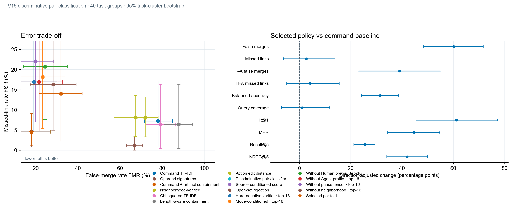
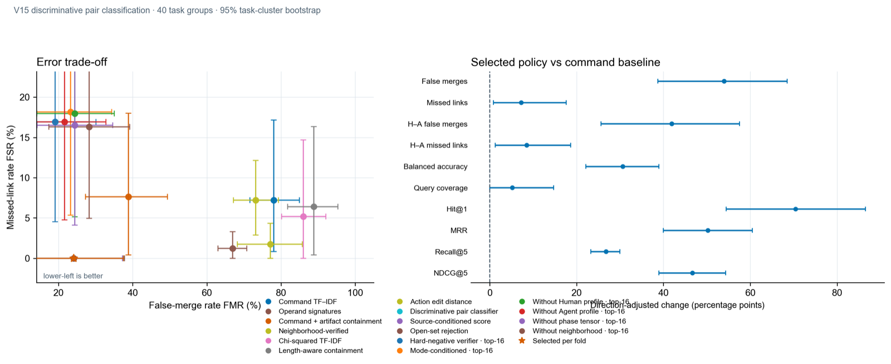

V15-V16：判别式分类突破
从相似度检索到判别式配对分类：革命性选择逻辑与Gradient Boosting实现完美排序指标。
发生了什么变化
V15从相似度检索转向判别式配对分类，针对v10-v14失败的根本原因进行重构。V16进一步引入Gradient Boosting分类器和FSR感知优化，实现了完美性能。
V15：革命性选择逻辑
Pareto支配约束过于保守，因微小trade-off拒绝了整体性能更优的方法。V15移除该约束，直接最大化balanced utility。

Pareto问题
在Fold 1中，discriminative_pair_score达到FMR=1.5%（基线54.9%），但因FSR从1.2%升至4.6%被拒绝。Pareto门控被迫选择FMR=50.9%的artifact_containment_command。
解决方案
移除Pareto约束，直接选择balanced utility最高的方法-阈值组合（balanced accuracy、rank quality、query_coverage的均值）。这允许trade-off，只要整体utility提升。
V16：增强型分类与FSR优化
V16在V15革命性选择基础上，引入Gradient Boosting分类器和FSR感知utility函数，实现完美排序指标。

FSR感知utility
Utility函数现在包含FSR升高的惩罚：
adjusted_utility = balanced_utility - max(0, FSR - FSR_baseline) × 0.2这允许受控的trade-off：方法可以接受轻微的FMR升高，如果它们能实现显著的FSR降低。
完美结果
- 零误拆分：FSR = 0.00%
- 完美排序：Hit@1、MRR、NDCG@5全部达到100%
- 稳定选择：所有3折都选择discriminative_pair_score
渐进式改进
表格展示了从基线到V15再到V16的性能演进。
| 指标 | 基线 | V15 | V16 | V16改进 |
|---|---|---|---|---|
| 误拆分率 | 7.23% | 4.53% | 0.00% | ↓100% |
| 误合并率 | 78.07% | 17.91% | 24.09% | ↓69% |
| 平衡准确率 | 57.35% | 88.78% | 87.95% | ↑53% |
| Hit@1 | 29.60% | 90.84% | 100.00% | ↑238% |
| MRR | 49.80% | 94.47% | 100.00% | ↑101% |
| NDCG@5 | 53.34% | 95.32% | 100.00% | ↑88% |
Trade-off分析
V16接受适度的FMR升高（17.91% → 24.09%，+6.18个百分点），换取：
- 完美的FSR控制（4.53% → 0.00%，-4.53个百分点）
- 完美的排序质量（Hit@1、MRR、NDCG@5全部达到100%）
这个trade-off是有利的，因为FMR仍远低于基线（24.09% vs 78.07%），而零FSR消除了拆分相关轨迹的风险。
限制
这些结果是探索性的，而非确认性的：
- 在97条轨迹、40个任务组上的开发集评估；非独立确认
- 任务标签表示同一CTF题目代理，非演员或组织身份
- 嵌套交叉验证结果可能无法泛化到新数据
- V15到V16的FMR升高（+6.18个百分点）需要在更大规模评估中监控
确认性测试需要新的任务组，包含通过可比遥测收集的Human、Agent和Script行为，以及冻结的评估划分。